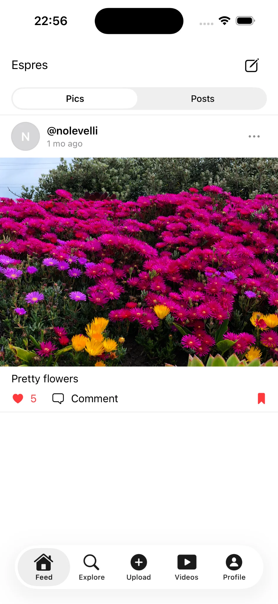
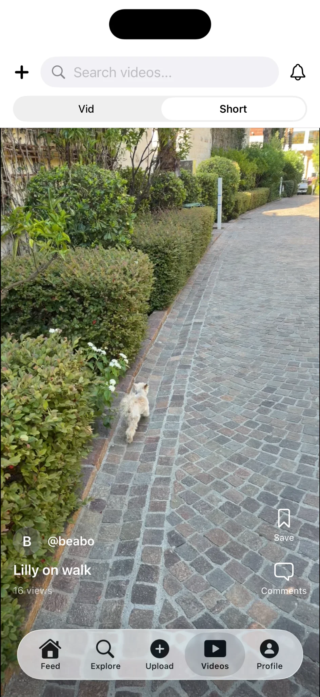
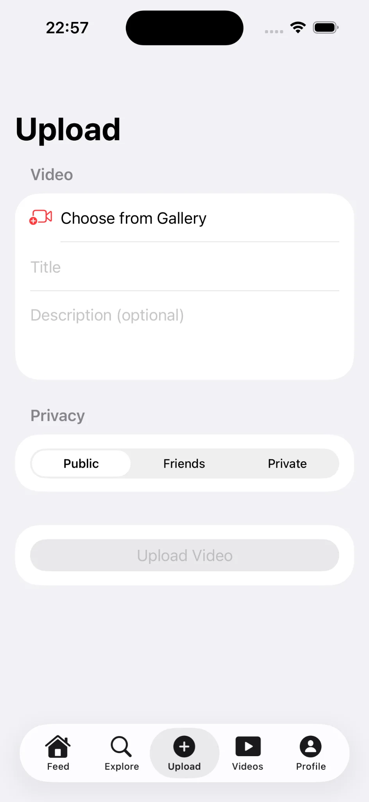
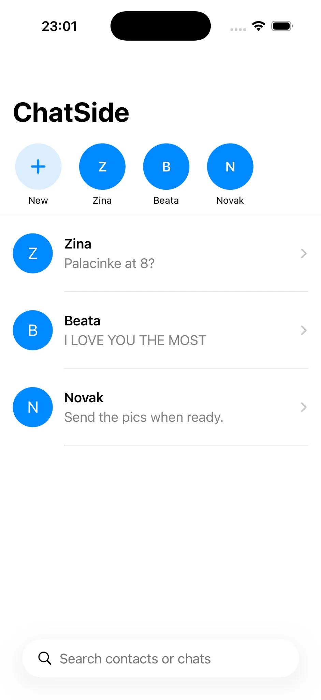
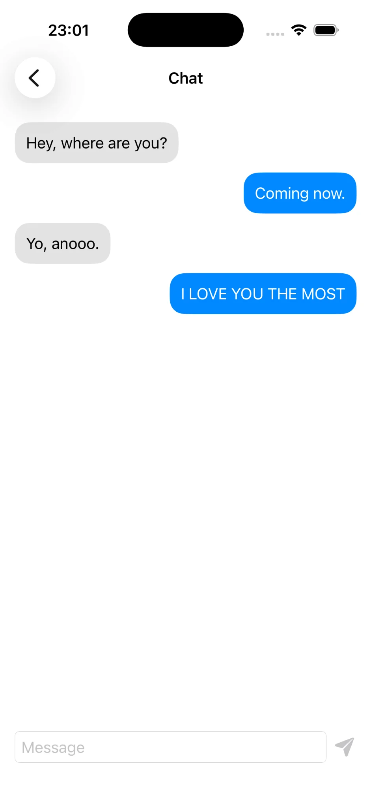

Novak Velimirović.
I build iOS apps with SwiftUI, Firebase, and REST APIs. My work includes social feeds, media upload, video experiences, profiles, and direct messaging.
A SwiftUI social platform built beyond static screens.
Espres connects account flows, photo and text feeds, video discovery, media upload, profiles, saved content, settings, comments, and messaging in one iOS app.
What I built
I focused on connected user flows, app state, Firestore-backed data, media interfaces, and reusable SwiftUI components. The project demonstrates how I organize a growing application and keep its features understandable.
Technology
Social feed
Photo and text posts, reactions, comments, saved content, and segmented browsing.
Video
Standard and short-form video views, search, saves, comments, and view metadata.
Accounts
Authentication, profiles, edit flows, settings, password changes, and session actions.
Upload
Gallery selection, titles, descriptions, privacy choices, and upload flow structure.
Messaging
Conversation list, direct chat interface, message input, and reusable chat models.
App structure
Feature-focused views, service layers, shared components, and clear data models.
See the complete app flow.
From sign-in to settings.
The demo moves through authentication, feeds, explore, short-form video, search, messages, profile tools, and account settings. It shows how the individual screens work together as one product.
Key moments at a glance.
Three screens remain for recruiters who want a quick visual overview without playing the full demo.



Organized to keep growing.
Espres
├── Models
│ ├── User, Post, Video
│ ├── Comment
│ └── Message
├── Services
│ ├── UserSession
│ ├── PostStore
│ ├── VideoStore
│ └── ChatService
├── Views
│ ├── Auth, Feed, Explore
│ ├── Upload, Videos
│ └── Profile, Messages, Settings
└── Shared
└── Reusable UI components
Readable and explainable.
As the app expanded, I separated models, services, feature views, and shared UI. The structure is still evolving, but it gives each responsibility a clear place.
A focused messaging experience.
ChatSide is a compact SwiftUI chat project built around conversation discovery, contact search, new-chat selection, message previews, and a clean one-to-one conversation interface.
Why I built it
This smaller project let me focus closely on chat navigation, search states, list filtering, message presentation, and a simple interface that feels at home on iOS.
Technology
A quick look at the interaction.
A simple chat app built to feel quick and familiar.
ChatSide is a SwiftUI messaging prototype I built to practice the core interactions of a real chat app: browsing recent conversations, searching contacts, and starting a new message.


What I use now—and what I’m learning next.
I keep current capabilities separate from my learning roadmap so employers can see an honest picture of my experience and direction.
Current skills
I understand how iOS apps communicate with REST APIs through HTTP requests, JSON data, asynchronous operations, error handling, and displaying remote data in the interface.
Actively learning
I’m expanding into more Apple frameworks, modern API approaches, real-time communication, authentication standards, persistence, commerce, maps, and external SDK integration.
These are learning goals, not claims of production experience. I’ll move each technology into my current stack as I complete projects with it.
Open to iOS opportunities.
I’m looking for iOS roles, internships, or freelance work where I can contribute with SwiftUI, Firebase, and REST APIs while continuing to grow with experienced engineers.